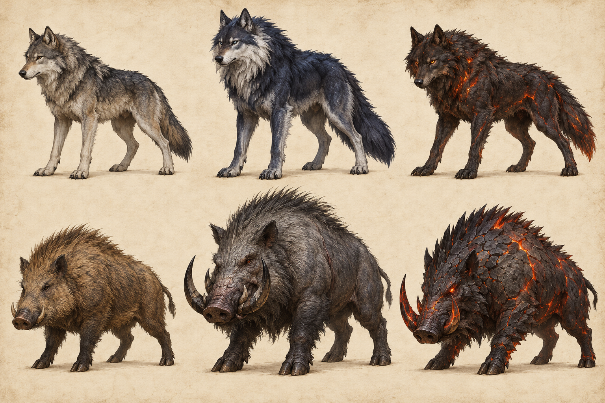
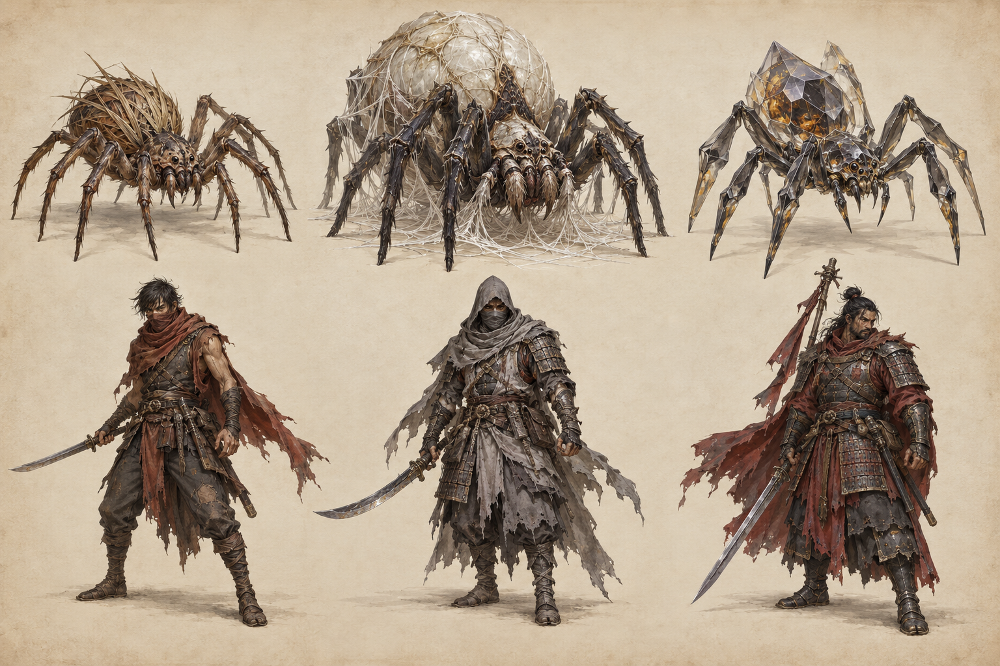
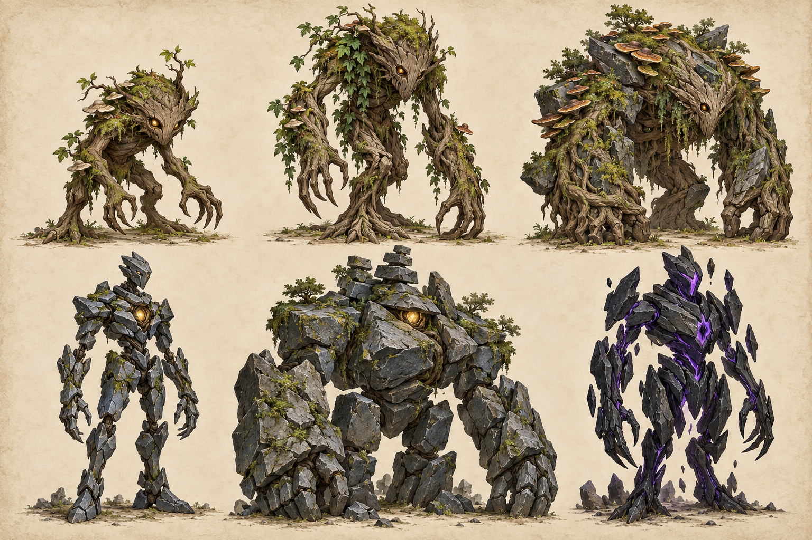
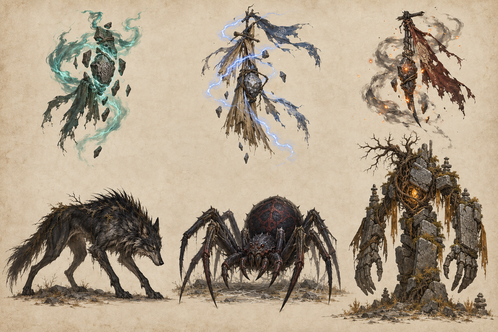
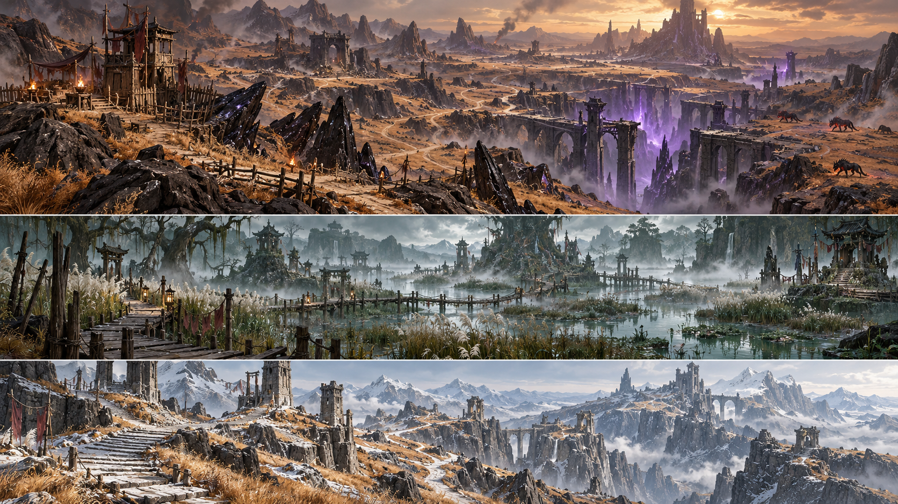
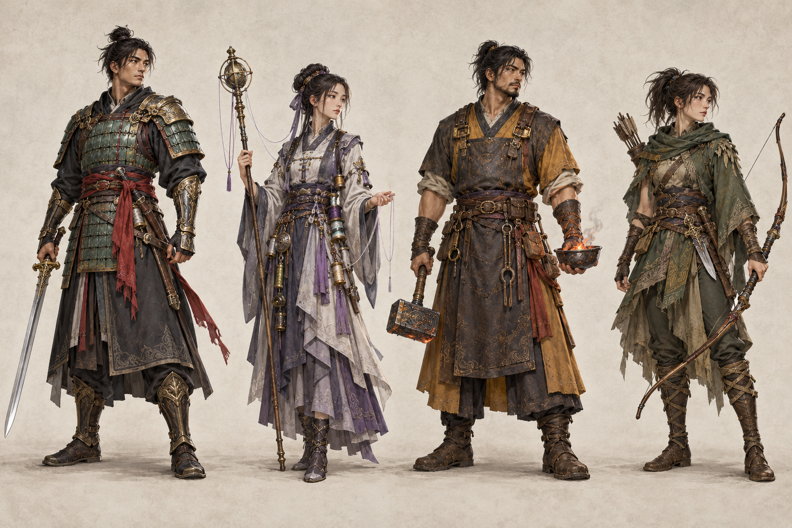
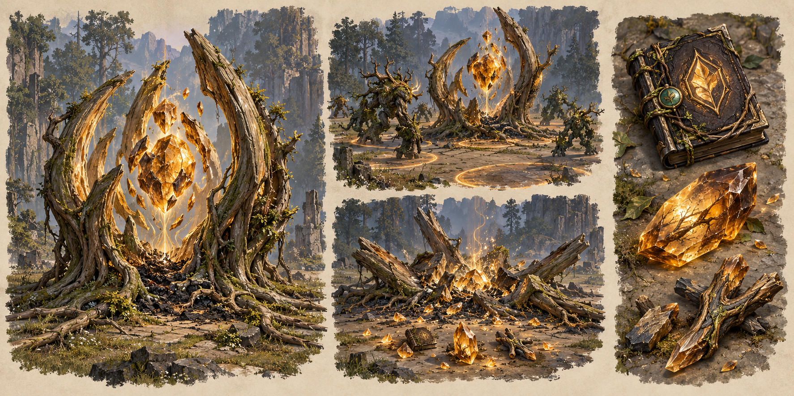
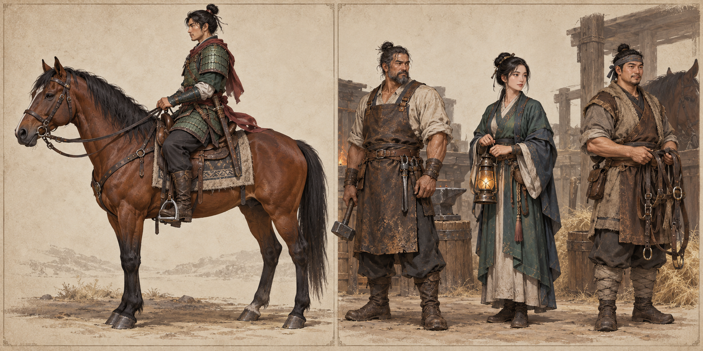
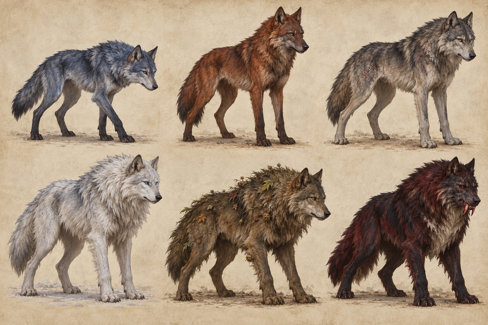
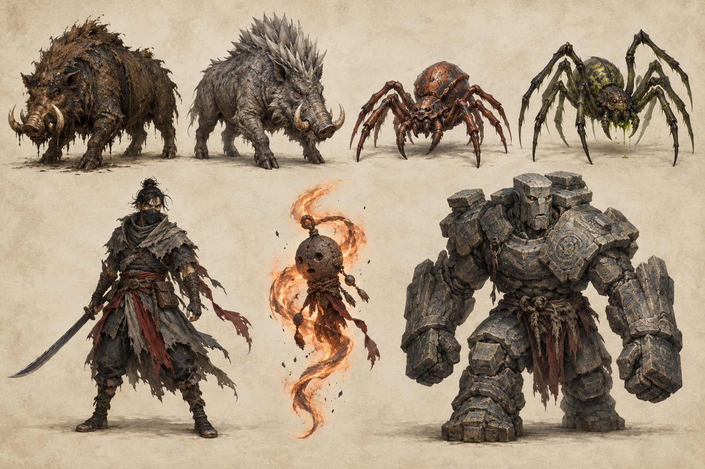

Twelve production concept plates
The art book
Full-resolution generated illustrations, opened and inspected. Art review · Exact prompt set
Wild beasts

bestiary_wolves_boars.png
Spiders and outlaws

bestiary_spiders_bandits.png
Root and stone creatures

bestiary_roots_stone.png
Wisps and elite silhouettes

bestiary_wisps_elites.png
Briarwood March

world_briarwood.png
Cinderfall Basin and future regions

world_cinderfall.png
Four player classes

classes_four.png
Weapons and armor +0 to +9

gear_upgrades.png
Spawn points and mastery loot

fractures_mastery.png
Town services, mount and tack

town_mounts.png
Wolf variants

bestiary_wolf_variants.png
Remaining creature variants

bestiary_remaining_variants.png